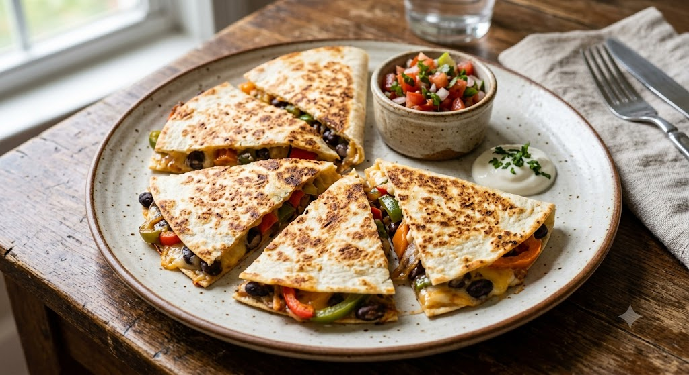

This is a simple and delicious veggie quesadilla recipe.

Description:
Flavor Profile
Savory, cheesy, and smoky. Melty cheese binds together sautéed peppers, onions, and black beans, enhanced by a warm hint of earthy cumin and mild chili.
Culinary Context
Inspired by traditional Mexican street food culture, the quesadilla is an adaptable comfort food staple designed to transform everyday ingredients into a fast, satisfying meal.
Ingredients
Tortillas: 2 large flour tortillas
Filling: 1 cup shredded cheddar or Monterey Jack cheese, ½ cup black beans (rinsed), ½ cup bell peppers and onions (sliced)
Seasoning: 1 tsp cooking oil, ¼ tsp cumin, pinch of salt and pepper
Instructions
Sauté veggies: Heat oil in a skillet over medium heat. Cook the bell peppers and onions for 3–4 minutes until soft.
Assemble: Place one tortilla in the skillet. Sprinkle half the cheese, add the cooked veggies and black beans, season with cumin, and top with the remaining cheese and second tortilla.
Cook: Toast for 2-3 minutes per side until the tortilla is golden-brown and crispy, and the cheese is fully melted.
Slice and serve: Cut into wedges and serve warm with salsa or sour cream!